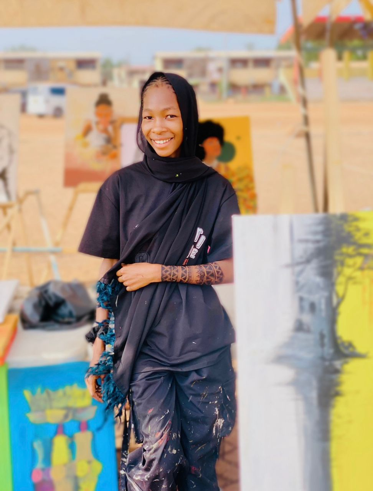

OUR IMPACT SO FAR
Friends of Fuo 2 Inc, is working alongside the Fuo AME Zion Basic school community in Tamale, Ghana to strengthen the learning environment one classroom at a time.
Through the generosity of donors, and partners, students who once sat on classroom floor now have desks, learning materials, and essential supplies that support their education
Just $60 provides a dual desk built locally in Tamale, seating two students who would otherwise learn while sitting on the classroom floor.

Friends of Fuo 2 Inc, is working alongside the Fuo AME Zion Basic school community in Tamale, Ghana to strengthen the learning environment one classroom at a time. Through the generosity of donors, and partners, students who once sat on classroom floor now have desks, learning materials, and essential supplies that support their education Just $60 provides a dual desk built locally in Tamale, seating two students who would otherwise learn while sitting on the classroom floor.
IMPACT IN ACTION
- 164 Dual Desks delivered
- 228 Students Now Seated
- 3 Classroom Whiteboards Replaced
- 4 Teacher Test books Provided
- 100 Exercise books Distributed
- 50 Pens and Rulers Provided
- 850 Pencils Supplied
- 3 School Uniforms Provided
- 7 Pairs of School Shoes and Socks
Each contribution made helps create a more supportive and effective learning environment for students and teachers.

"Ribbon Cutting Ceremony - Delivered 30 desks during my visit"
- 164 Dual Desks delivered
- 228 Students Now Seated
- 3 Classroom Whiteboards Replaced
- 4 Teacher Test books Provided
- 100 Exercise books Distributed
- 50 Pens and Rulers Provided
- 850 Pencils Supplied
- 3 School Uniforms Provided
- 7 Pairs of School Shoes and Socks
"Ribbon Cutting Ceremony - Delivered 30 desks during my visit"
At Fuo AME Zion Basic School, every classroom tells a story.
On the wall is a plaque-listing the names of those who made learning possible in that room. Parents see it. Teachers see it. Students see it.
Children grow up knowing:
Someone somewhere cared enough to invest in us.
This is how generosity becomes memory.
This is how impact becomes legacy.
When you give to Friends of Fuo 2 Inc., your name isn't filed away, it is honored where learning happens

"Attending the first handing over was the family of Rev. Winfred Abormegah "
"Attending the first handing over was the family of Rev. Winfred Abormegah "
FIELD UPDATES
Our work is guided by ongoing communication with educators and community memebers in Tamale who share updates, photos, and videos from the school
The classroom desks are built locally in Tamale. The first desks were crafted by Emmanuel Dogbe Dogbatse, and today the work continues through local fabricator Elikplimi Abormegah. Producing the desks locally ensures they meet the needs of the school while supporting skilled craftsmen in the community.
As part of continued classroom transformation, local abstract painting, mural and mixed media artist Yussif Muksina Suhuyini, together with graphic designer Elikplimi Abormegah, will design three murals for the Nursery and Kindergarten Classrooms
One of the murals will be outline by the artists and then completed by the students themselves as a collaborative art project, giving the children an opportunity participate in creating a joyful and inspiring space for their own classroom.

"An image of Yussif Muksina Suhuyini, a local muralist and artist"